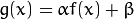
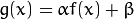
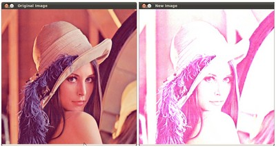
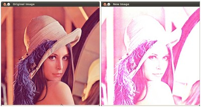

Перекладено українською: Арсеній Чеботарьов, Ніжин 2015. ac2epsilon@gmail.com
Зміна контрасту та яскравості зображення
Ціль
В цій інструкції ми навчимость наступному:
- Отримувати доступ до значень пікселів
- Ініціалізувати матрицю нулями
- Вивчимо, що робить saturate_cast , та чому вона корисна
- Отримаємо трохи цікавої інформації щодо трансформації пікселів
Теорія
Зауваження
Пояснення нижче належить до книги Computer Vision: Algorithms and Applications автора Richard Szeliski
Обробка зображень
- Головний оператор обробки зображень є функцією, що бере одне або більше вхідних зображень, та продукує вихідне зображення.
- Трансформації зображень можуть розглядатись як:
- Операції з крапками (трансформація пікселів)
- Сусідні операції (побудовані на площинах)
Піксельні трансформації
- Коли використовується цей тип трансформацій обробки зображень, значення кожного вихідного пікселя залежить тільки від відповідного вхідного значення пікселя (плюс, потенційно, від деяких глобально накопичених інформаціх або параметрів).
- Прикладами таких операцій є налаштування яскравості та контрасту, а також корекція та трансформація кольору.
 : 
: Код
- Наступний код виконує ці операції:
#include <cv.h>
#include <highgui.h>
#include <iostream>
using namespace cv;
double alpha; /**< простий контроль контрастом */
int beta; /**< простий контроль яскравістю */
int main( int argc, char** argv )
{
/// Читати зображення, надане користувачем
Mat image = imread( argv[1] );
Mat new_image = Mat::zeros( image.size(), image.type() );
/// інійіалізація зображень
std::cout<<" Базова лінійна трансформація "<<std::endl;
std::cout<<"-------------------------"<<std::endl;
std::cout<<"* Введіть значення альфа [1.0-3.0]: ";std::cin>>alpha;
std::cout<<"* Введіть значення бета [0-100]: "; std::cin>>beta;
/// Робимо операцію new_image(i,j) = alpha*image(i,j) + beta
for( int y = 0; y < image.rows; y++ )
{ for( int x = 0; x < image.cols; x++ )
{ for( int c = 0; c < 3; c++ )
{
new_image.at<Vec3b>(y,x)[c] =
saturate_cast<uchar>( alpha*( image.at<Vec3b>(y,x)[c] ) + beta );
}
}
}
/// створюємо вікна
namedWindow("Original Image", 1);
namedWindow("New Image", 1);
/// відображуємо зображення до та після
imshow("Original Image", image);
imshow("New Image", new_image);
/// чекаємо, коли користувач закриє застосунок
waitKey();
return 0;
}
Пояснення
-
Ми починаємо зі створення параметрів, щоб зберігти параемтри пеертворення, що введені користувачем:
double alpha; int beta;
-
Ми завантажуємо зображення з використанням imread , та зберігаємо його в об'єкті Mat:
Mat image = imread( argv[1] );
-
Тепер, оскільки ми будемо робити деякі перетворення з зображенням, ми створюємо новий об'єкт Mat для зберігання нової версії. Також ми бажаємо зберігти наступні властивості:
- Початкові значення пікселів встановлені в нуль
- Той же розмір та тип, що і у початкового зображення
Mat new_image = Mat::zeros( image.size(), image.type() );
Ми бачимо, що Mat::zeros повертає ініціалізатор в стилі Matlab, базуючись на image.size() та image.type()
-
Тепер, щоб виконати операцію, ми будемо отримувати доступ до кожного пікселя. Оскільки ми робимо з зображеннями RGB, ми будем омати три значення на один піксель (R, G та B), так що ми також будемо отримувати доступ до них окремо. Ось цей фрагмент коду:
for( int y = 0; y < image.rows; y++ ) { for( int x = 0; x < image.cols; x++ ) { for( int c = 0; c < 3; c++ ) { new_image.at<Vec3b>(y,x)[c] = saturate_cast<uchar>( alpha*( image.at<Vec3b>(y,x)[c] ) + beta ); } } }
Зауважте наступне:
- Щоб отримати доступ до кожного пікселя в зображенні, ми використовуємо цей синтаксис: image.at<Vec3b>(y,x)[c] , де y це рядок, x це стовпчик, та c це суб-стовбчик, або індекс прошарку, або колір R, G або B (0, 1 або 2).
- Оскільки операція може отримати значення, що не є цілими (коли параметри з плаваючою крапкою), ми використовуємо saturate_cast щоб впевнитись, що значення прийнятні.
-
Нарешті, ми створюємо вікна та відображуємо зображення, в звичайний спосіб.
namedWindow("Original Image", 1); namedWindow("New Image", 1); imshow("Original Image", image); imshow("New Image", new_image); waitKey(0);
Зауваження
Замість використовування циклів for для доступу до пікселів ми можемо просто надати команду:
image.convertTo(new_image, -1, alpha, beta);
де convertTo насправді ефективно пиконує new_image = a*image + beta. Однак ми бажали показати вам, як отримувати доступ до кожного пікселя. В жодному разі, обоє методи дають той самий результат, але convertTo більш оптимізована, та робить значно швидше.
 
